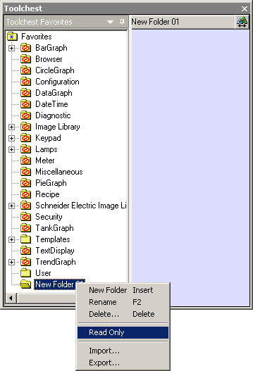
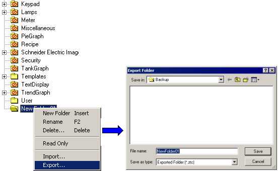
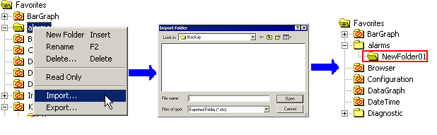

|
|
|
|
|
|
|
|
Folders in the Toolchest window operate similarly to folders in Windows Explorer. You can delete and rename Toolchest folders just like you would Windows folders. You can also perform the following operations with Toolchest folders:
Write-protected folders cannot have objects added to them or objects deleted from them. Furthermore, objects in a write-protected folder cannot be overwritten.
In the Toolchest window, right-click the user-created folder you wish to write-protect and choose Read Only. The folder icon will then change to a Read Only folder icon.

The Toolchest Parts provided with the Vijeo-Designer are located in permanently read-only folders.

Read-only user-created folder
Permanently read-only folders included in Vijeo-Designer
You can export objects that are stored in folders. You cannot export folders that are permanently read-only.
Click the Toolchest icon  in the menu bar to open the Toolchest window, right-click the folder, and click Export to open the Export Folder dialog box.
in the menu bar to open the Toolchest window, right-click the folder, and click Export to open the Export Folder dialog box.
In the Export Folder dialog box, click Save to back up the folder and its contents as a .ztc file.

The folder and its contents, which include subfolders and read-only folders in addition to the Toolchest objects, are saved to a .ztc file.
Click the Toolchest icon  in the menu bar to open the Toolchest window, right-click a folder, and click Import.
in the menu bar to open the Toolchest window, right-click a folder, and click Import.
Browse for and select the .ztc file to import, and then click Open.
The imported .ztc files are created as a subheading to the selected folder.
